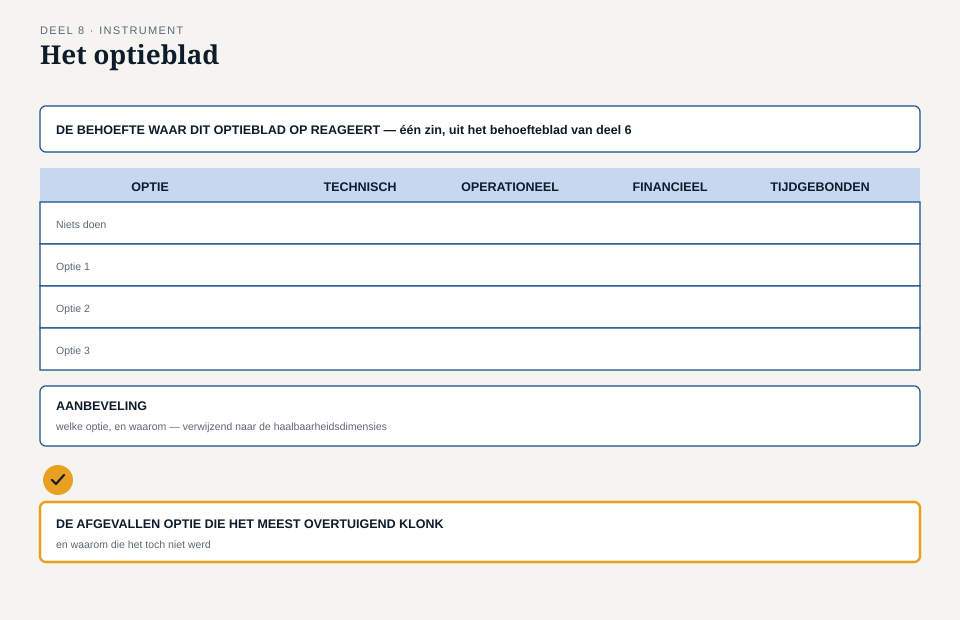

Deel 8 — Oplossing: opties, haalbaarheid, aanbeveling
Reader · Ductus-cursus Business-analyse · niveau 1 (fundament) · deel 8 van 30
8.1 Waar dit deel over gaat
In deel 2 bleef het vakje “oplossing” in Merels evenwichtsblad bewust leeg — te vroeg, zei de reader toen. Met behoefte (deel 6) en belanghebbenden (deel 7) nu goed in beeld, is dat vakje aan de beurt. Dit deel gaat niet over hoe je een oplossing bouwt — dat is het werk van deel 18 en verder, en van de zustercursussen — maar over hoe je er meerdere naast elkaar zet, ze eerlijk beoordeelt, en een aanbeveling doet die verdedigbaar is, inclusief de opties die je afwijst.
Aan het eind van dit deel kun je:
- meerdere oplossingsopties genereren voor dezelfde behoefte, inclusief de optie “niets doen”;
- haalbaarheid beoordelen langs meerdere dimensies, niet alleen de technische;
- een aanbeveling onderbouwen die net zo expliciet is over wat wordt afgewezen als over wat wordt gekozen;
- met het optieblad dit proces navolgbaar vastleggen.
Dit deel sluit geen post-mortembevinding rechtstreeks — het bouwt gereedschap dat in deel 9 en in latere niveaus terugkeert, en het plant een principe dat pas in niveau 3 zijn volle gewicht krijgt.
8.2 De casus: te snel bij één antwoord
Uit het casusdossier: de herstartgroep heeft de behoefte van kleine werkgevers (deel 6) en de volledige belanghebbendenkaart (deel 7) nu compleet.
In een werksessie stelt iemand voor: “Laten we het portaal gewoon uitbreiden zodat correcties ook kunnen.” Er wordt instemmend geknikt. Merel aarzelt.
“Voordat we dat kiezen — hebben we nog naar iets anders gekeken?”
“Zoals wat? Dit lost het toch op?”
“Misschien. Maar we wisten bij WGP 2.0 ook meteen wat de oplossing was, en toen bleek dat we het probleem niet eens goed kenden. Nu kennen we het probleem wel — laten we in ieder geval even kijken of dit ook echt de beste manier is.”
Dit is een herkenbaar moment: zodra een behoefte helder is, voelt de eerste redelijke oplossing als vanzelfsprekend. Dat gevoel is niet fout — de eerste oplossing kán de beste zijn — maar het is een aanname die verdient om getoetst te worden tegen alternatieven, net zoals elke andere aanname in deze cursus tot nu toe.
8.3 Meerdere opties, altijd
Een aanbeveling die niet is afgezet tegen alternatieven, is geen aanbeveling — het is een eerste ingeving die toevallig is opgeschreven. Reken daarom bij elke oplossingsvraag met minstens drie opties, plus een vierde die je bijna nooit serieus overweegt en juist daarom altijd moet vermelden: niets doen.
Waarom “niets doen” meetellen? Niet omdat het vaak de beste optie is — meestal is dat niet zo — maar omdat het de vergelijkingsbasis is. Zonder “niets doen” als referentiepunt is er geen manier om te laten zien hóeveel beter de andere opties zijn, en voor wie. Bovendien dwingt deze optie je terug naar de behoefte: als “niets doen” bijna net zo goed scoort als de voorgestelde oplossing, was de behoefte misschien minder dringend dan gedacht.
Voor de correctieproblematiek van kleine werkgevers zijn, naast “niets doen”, minstens drie andere opties denkbaar:
- Het portaal uitbreiden zodat correcties met terugwerkende kracht direct kunnen worden ingevoerd.
- Een apart, eenvoudig formulier voor correcties, los van het portaal, met een lichtere verwerkingsroute.
- Het derde kanaal formaliseren: e-mail en telefoon erkennen als volwaardig kanaal en er gericht capaciteit op inrichten, in plaats van het als lek te behandelen.
Drie totaal verschillende manieren om aan dezelfde behoefte tegemoet te komen — geen ervan is vanzelfsprekend de beste, en dat is precies waarom je ze naast elkaar moet zetten voordat je kiest.

8.4 Haalbaarheid: meer dan techniek
Voor elke optie geldt: haalbaarheid is geen enkelvoudig oordeel maar een afweging langs meerdere dimensies. Vier dimensies dekken het grootste deel van wat er in de praktijk toe doet.
Technische haalbaarheid. Kan het gebouwd worden binnen de bestaande systemen en architectuur, of is er iets fundamenteel nieuws nodig? Het portaal uitbreiden botst op dezelfde systeemgrens die de oorspronkelijke beperking veroorzaakte — dat maakt deze optie technisch minder eenvoudig dan hij op het eerste gezicht lijkt.
Operationele haalbaarheid. Past de optie in het dagelijkse werk van de mensen die ermee moeten werken? Het derde kanaal formaliseren vraagt om structureel meer capaciteit bij Klantenservice — een reële kostenpost, maar wel een die vandaag al, ongepland en ongefinancierd, wordt gedragen.
Financiële haalbaarheid. Wat kost de optie, in ontwikkeling en in beheer, en weegt dat op tegen de waarde die in deel 2 en 6 is vastgesteld? Let op: “goedkoop” en “haalbaar” zijn niet hetzelfde — een goedkope optie die niemand gebruikt, is geen haalbare oplossing voor de behoefte.
Tijdgebonden haalbaarheid. Past de optie binnen de termijn die relevant is — bijvoorbeeld met het oog op de naderende Wtp-transitie? Een optie die pas over drie jaar klaar is, kan technisch en financieel prima haalbaar zijn en toch de verkeerde keuze, omdat de context inmiddels is veranderd.
Een optie kan op de ene dimensie sterk zijn en op de andere zwak
Dat is geen probleem van de optie, maar informatie die je nodig hebt. Het formaliseren van het derde kanaal scoort waarschijnlijk technisch eenvoudig, operationeel duur, en snel te realiseren. Het portaal uitbreiden scoort waarschijnlijk technisch complexer, operationeel neutraal, en langzamer. Geen van beide oordelen is compleet zonder de andere dimensies erbij.
8.5 Een aanbeveling die ook “nee” onderbouwt
De meest voorkomende fout bij een aanbeveling is dat zij alleen uitlegt waarom de gekozen optie goed is, en zwijgt over de andere opties. Dat maakt de aanbeveling onnodig kwetsbaar: iedereen die een van de afgewezen opties zelf goed vond, blijft met een onbeantwoorde vraag zitten, en komt er later — vaak op een ongelukkiger moment — op terug.
Een sterke aanbeveling doet drie dingen:
- Wijst een optie aan op basis van de haalbaarheidsafweging.
- Legt uit waarom de andere opties zijn afgevallen — niet met een enkel woord (“te duur”), maar met de dimensie en de reden.
- Benoemt wat er met de aanbeveling wordt opgegeven — geen enkele optie is op alle dimensies de beste; een goede aanbeveling erkent dat expliciet in plaats van de gekozen optie voor te stellen als zonder nadelen.
Dit principe — een onderbouwd “nee, dit niet” is net zo waardevol als een onderbouwd “ja, dit wel” — is meer dan een schrijftip. Het is een terugkerend thema in deze hele cursusfamilie, en het wordt in niveau 3 letterlijk de maatstaf waarop een masterproef wordt beoordeeld: een rubric die een onderbouwd “nee, dit niet” hoger waardeert dan een oppervlakkig “ja, alles”. De kiem daarvan ligt hier, in een simpel optieblad op niveau 1.
8.6 De werkvorm: het optieblad
Het instrument van dit deel is het optieblad: een sjabloon dat meerdere opties naast elkaar beoordeelt en uitmondt in een aanbeveling die evenveel aandacht geeft aan wat wordt afgewezen als aan wat wordt gekozen.
Het blad
De behoefte waar dit optieblad op reageert — één zin, uit het behoefteblad van deel 6. Opties — minstens drie, plus “niets doen”. Per optie: haalbaarheid op vier dimensies — technisch, operationeel, financieel, tijdgebonden. Kort, in trefwoorden, geen uitputtende analyse op dit niveau. Aanbeveling — welke optie, en waarom, verwijzend naar de haalbaarheidsdimensies.
Het veld dat het verschil maakt
De afgevallen optie die het meest overtuigend klonk — en waarom die het toch niet werd.
Dit veld is bewust anders geformuleerd dan simpelweg “waarom de andere opties afvielen”. Het vraagt naar de sterkste tegenkandidaat, niet naar een zwak stroman-alternatief dat toch nooit een kans had. Wie dit veld eerlijk invult, laat zien dat de vergelijking serieus is geweest — en levert bovendien het materiaal waarmee je straks, in een gesprek met een sceptische belanghebbende, kunt uitleggen waarom zíjn favoriete optie het net niet werd.

Toegepast op de casus
| Optie | Technisch | Operationeel | Financieel | Tijdgebonden |
|---|---|---|---|---|
| Niets doen | n.v.t. | Huidige belasting Klantenservice blijft | Geen extra kosten, wel voortdurende verborgen kosten | n.v.t. |
| Portaal uitbreiden | Complex — botst op bestaande systeemgrens | Neutraal voor Klantenservice op termijn | Hogere ontwikkelkosten | Langzamer |
| Apart correctieformulier | Eenvoudiger, los van de systeemgrens | Licht positief — gestructureerde invoer i.p.v. e-mail | Gematigd | Sneller te realiseren |
| Derde kanaal formaliseren | Eenvoudig | Vraagt structurele capaciteit | Doorlopende kosten, geen ontwikkelkosten | Snelst |
Aanbeveling (voorbeeld, ter illustratie): het aparte correctieformulier, vanwege de balans tussen haalbaarheid en tempo, met formalisering van het derde kanaal als tussenoplossing tot het formulier er is. Sterkste afgevallen optie: het portaal uitbreiden — conceptueel de meest voor de hand liggende oplossing, maar afgevallen vanwege de systeemgrens die dezelfde complexiteit terugbrengt die de oorspronkelijke beperking veroorzaakte.
8.7 Wat het examen hierover vraagt
Dit deel dekt domein 6, oplossing, 10% van het ECBA-examen. Verwacht vragen die:
- vragen naar het nut van de optie “niets doen” in een vergelijking;
- een situatie schetsen en vragen welke haalbaarheidsdimensie over het hoofd is gezien;
- vragen naar wat een aanbeveling compleet maakt.
Begrippenlijst, vervolg
| Nederlands | Engels |
|---|---|
| optie | option |
| haalbaarheid | feasibility |
| technische haalbaarheid | technical feasibility |
| operationele haalbaarheid | operational feasibility |
| aanbeveling | recommendation |
8.8 Terug naar de casus
Dit deel sluit geen bevinding, maar het corrigeert impliciet de kern van bevinding B1: waar WGP 2.0 begon met een oplossing die nooit tegen alternatieven werd afgezet, eindigt de herstart met een oplossing die dat wél is. Het optieblad is in die zin het spiegelbeeld van de allereerste les uit deze cursus.
Vooruit naar deel 9. Met alle vijf de andere kernconcepten nu uitgewerkt — verandering, behoefte, belanghebbende, en de opties voor een oplossing — resteert het laatste: hoe je vaststelt of het allemaal ook werkelijk waarde oplevert, en binnen welke grenzen dat moet gebeuren. Deel 9 gaat over waarde en context, en sluit bevinding B7: er is nooit afgesproken waaraan succes gemeten zou worden.